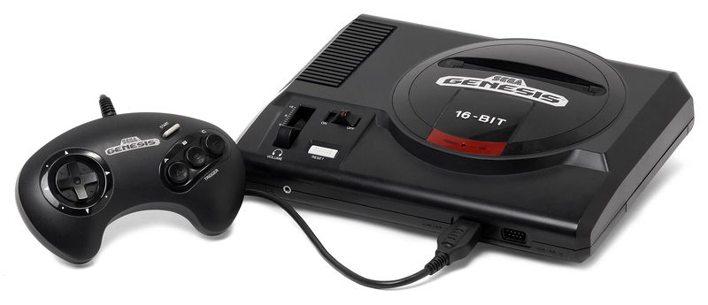
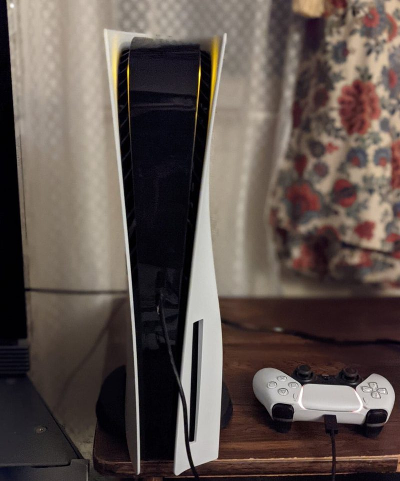

Welcome, Player One
Press Start tells the story of home video game consoles, the machines that plug into a TV in the living room. The tour begins with the Nintendo Entertainment System in 1985 and ends with today's PlayStation 5 and Xbox Series X|S. Along the way, you will see how games went from simple 8-bit sprites to 3D worlds, online multiplayer, and 4K graphics.
Game Over: The Crash of 1983
Before the NES, the video game business in North America nearly disappeared. Stores were flooded with too many consoles and low-quality games, and in 1983 the market crashed. Many retailers stopped selling video games altogether. When Nintendo released the NES in the United States in 1985, it had to convince stores that home consoles were worth another try.
Consoles That Shaped Gaming
| Console | Release Year | Maker | Best-Selling Game |
|---|---|---|---|
| Nintendo Entertainment System | 1985 | Nintendo | Super Mario Bros. |
| Sega Genesis | 1989 | Sega | Sonic the Hedgehog |
| PlayStation | 1995 | Sony | Gran Turismo |
| PlayStation 2 | 2000 | Sony | Grand Theft Auto: San Andreas |
| Xbox 360 | 2005 | Microsoft | Kinect Adventures! |
| Wii | 2006 | Nintendo | Wii Sports |
Choose Your Era

8 & 16-Bit Era
The NES brings gaming back, then the Super Nintendo and Sega Genesis battle in the first console war.

3D Revolution
Discs replace cartridges and games jump into 3D with the PlayStation, Nintendo 64, and PlayStation 2.

HD & Online Era
High-definition graphics, online multiplayer, and motion controls arrive with the Xbox 360, PS3, and Wii.

Today's Consoles
The PlayStation 5 and Xbox Series X|S bring fast SSD loading, digital libraries, and game subscriptions.
Have a favorite console or a gaming memory to share? Visit the Contact page and tell me about it.
Console photos from Wikimedia Commons. PlayStation 5 photo by Osh33m, licensed under CC BY-SA 4.0 (resized).